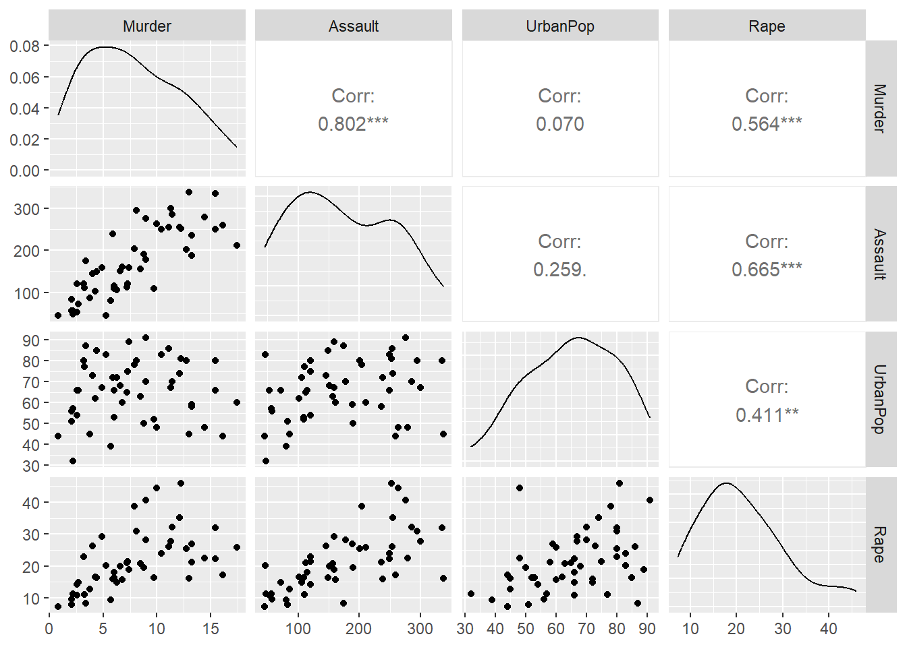
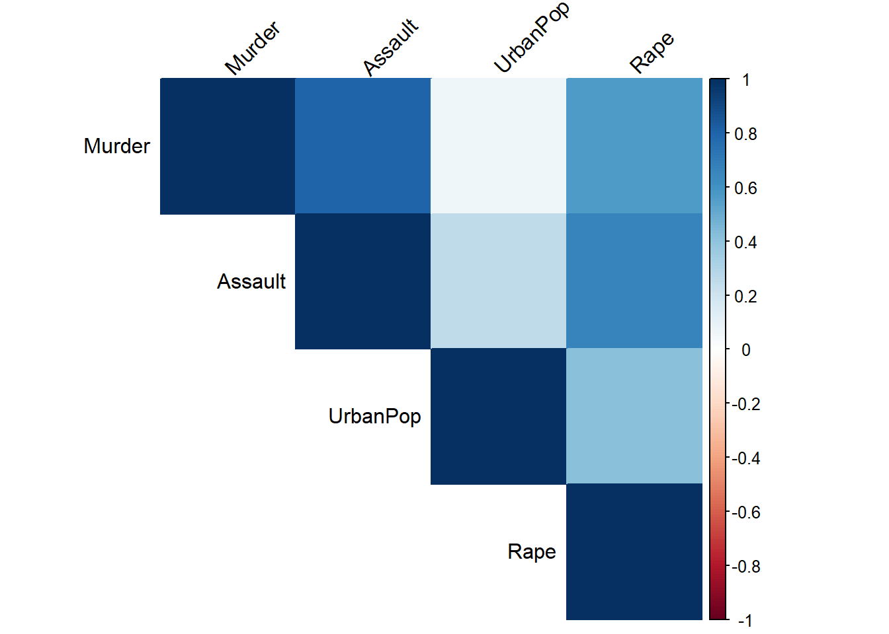

# Load necessary libraries
library(ggplot2)
library(GGally)
library(cluster)
library(dplyr)
library(factoextra)
library(dendextend)
library(gridExtra)
library(dendextend)Clustering Analysis
Clustering approaches to analyze the USArrests data
In this project, we perform clustering analysis on the USArrests dataset. The primary goal is to identify patterns and groupings within the data using k-means and hierarchical clustering techniques.
First, we load the necessary libraries for our analysis. These include libraries for data manipulation, visualization, and clustering. We then set a seed for reproducibility and load the dataset.
# Set seed for reproducibility
set.seed(12345)
# Load the dataset
df <- read.csv("USArrests.csv", row.names = 1)We start with some exploratory data analysis (EDA) to understand the structure and relationships in the dataset. This includes checking the first few rows, creating pair plots, and visualizing the correlation matrix.
# Check the first few rows of the dataframe
head(df) Murder Assault UrbanPop Rape
Alabama 13.2 236 58 21.2
Alaska 10.0 263 48 44.5
Arizona 8.1 294 80 31.0
Arkansas 8.8 190 50 19.5
California 9.0 276 91 40.6
Colorado 7.9 204 78 38.7# Pairplot
ggpairs(df)
# Correlation matrix
cor_matrix <- cor(df)
corrplot::corrplot(cor_matrix, method = "color", type = "upper", tl.col = "black", tl.srt = 45)
We proceed with k-means clustering by first standardizing the data. To determine the optimal number of clusters, we calculate silhouette scores for a range of cluster numbers. The silhouette score measures how well each point lies within its cluster, with higher scores indicating better-defined clusters.
From the silhouette score plot, we see that the highest score is achieved with 2 clusters, so we choose 2 as the optimal number for our k-means clustering.
Finally, we perform k-means clustering with 2 clusters and visualize the results using PCA. PCA helps reduce the dimensionality of the data and allows us to visualize the clustering results in a 2D plot, making it easier to interpret the cluster structure.
# Standardize the data
scaled_df <- scale(df)
# Function to calculate silhouette score for given number of clusters
nbc <- function(n_clusters) {
km <- kmeans(scaled_df, centers = n_clusters, nstart = 10)
silhouette_score <- mean(silhouette(km$cluster, dist(scaled_df))[, 3])
return(silhouette_score)
}
# Calculate silhouette scores for a range of cluster numbers
n_clusters <- 2:15
silhouettes <- sapply(n_clusters, nbc)
# Plot silhouette scores
plot(n_clusters, silhouettes, type = "b", xlab = "n_clusters", ylab = "Silhouette Score")
# Perform k-means clustering with 2 clusters
km <- kmeans(scaled_df, centers = 2, nstart = 10)
# Perform PCA
pca <- prcomp(scaled_df)
# Create a dataframe with PCA results and cluster labels
pca_df <- as.data.frame(pca$x)
pca_df$cluster_label <- as.factor(km$cluster)
# Pairplot with PCA results colored by cluster labels
ggpairs(pca_df, mapping = aes(color = cluster_label))`stat_bin()` using `bins = 30`. Pick better value with `binwidth`.
`stat_bin()` using `bins = 30`. Pick better value with `binwidth`.
`stat_bin()` using `bins = 30`. Pick better value with `binwidth`.
`stat_bin()` using `bins = 30`. Pick better value with `binwidth`.
We finally perform hierarchical clustering using all combinations of complete, single, and average linkage methods with both Euclidean and Manhattan distances. This analysis reveals the significant impact of the linkage method choice on the clustering outcomes. Using “complete” or “average” linkage methods results in dendrograms that suggest the presence of two primary clusters of roughly equal size. In contrast, the “single” linkage method also indicates two clusters, but one of these clusters consists solely of the state of Alaska. The selection of the distance metric, whether Euclidean or Manhattan, has a relatively smaller influence on the final dendrograms for this dataset.
# Define methods and metrics
methods <- c("complete", "single", "average")
metrics <- c("euclidean", "manhattan")
# Create an empty list to store plots
plots <- list()
# Perform hierarchical clustering with different methods and metrics
for (method in methods) {
for (metric in metrics) {
dist_matrix <- dist(scaled_df, method = metric)
hdata <- hclust(dist_matrix, method = method)
dend <- as.dendrogram(hdata)
dend <- set(dend, "labels_cex", 0.5)
# Color the branches
dend <- color_branches(dend, k = 2)
# Create the dendrogram plot
p <- ggplot(as.ggdend(dend), theme_dendro = TRUE) +
ggtitle(paste(metric, "distance and", method, "linkage")) +
theme_minimal() +
theme(axis.text.x = element_text(angle = 90, vjust = 0.5, hjust = 1),
axis.text.y = element_blank(),
axis.ticks.y = element_blank(),
axis.title.y = element_blank())
plots[[length(plots) + 1]] <- p
}
}
grid.arrange(grobs = plots, ncol = 2, top = "Hierarchical Clustering Dendrograms")
Throughout the project, various data preprocessing, exploratory data analysis, and visualization techniques were employed to effectively communicate complex data insights. This analysis highlights the value of systematic approaches in data science for uncovering hidden structures and making informed decisions based on analytical results.